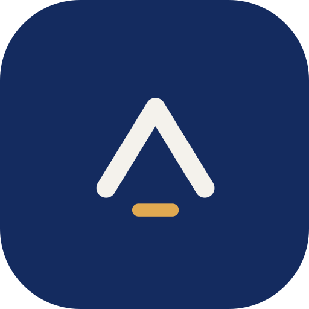
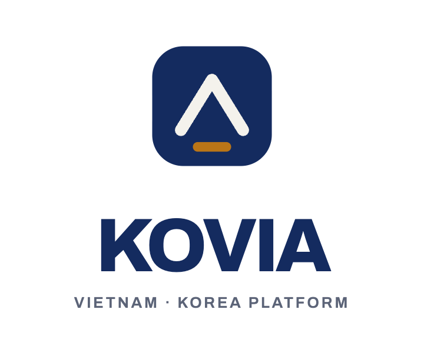
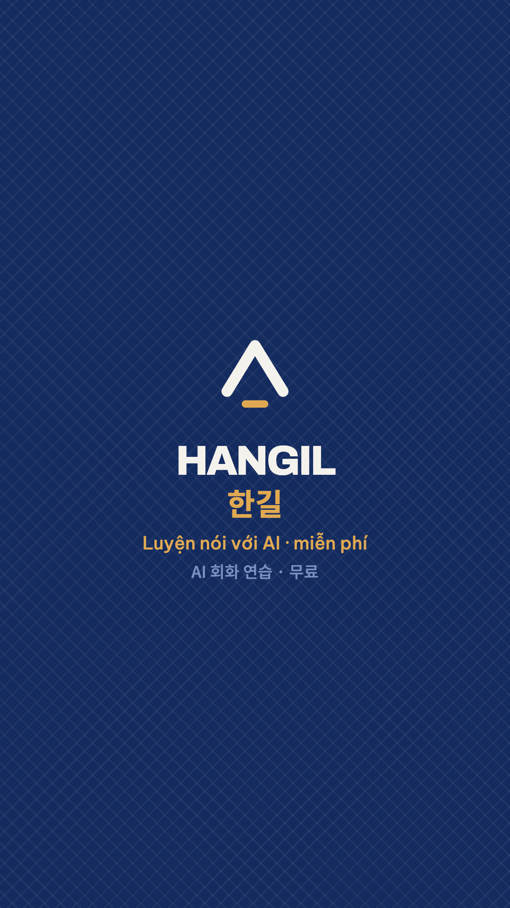
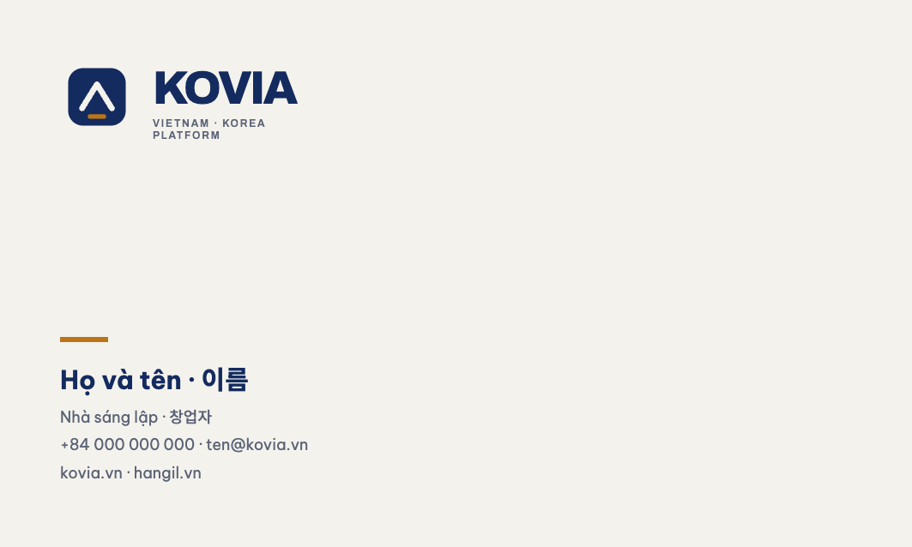

Một mái che, một nền đất, đóng trong khung dấu. Toàn bộ hệ thống — biểu tượng, biểu tượng phụ, hoạ tiết, nhãn kiểm định, nhân vật — sinh ra từ ba yếu tố của một hình duy nhất.
지붕 하나, 땅 하나, 그리고 이를 감싸는 도장 테두리. 심볼·서브 심볼·패턴·인증 배지·캐릭터까지 모든 요소가 이 하나의 형태에서 파생됩니다.
| Yếu tố · 요소 | Đọc là gì · 의미 | Vai trò · 시스템 내 역할 |
|---|---|---|
| Khung dấu 도장 테두리 |
Con dấu — đã xác nhận, đã chứng thực 도장 — 확인됨, 인증됨 |
Khuôn cho biểu tượng sản phẩm, ảnh, nhãn, app icon 아이콘·이미지·배지·앱 아이콘의 프레임 |
| Mũi chóp 꺾인 산 모양 |
Mái che · ngọn núi · nón lá · phụ âm ㅅ · mũi tên đi lên 지붕 · 산 · 논라(베트남 모자) · 자음 ㅅ · 상승 화살표 |
Dấu đầu dòng, mốc tiến độ, chỉ hướng 불릿, 진행 단계, 방향 표시 |
| Vạch xác nhận 가로 확인 바 |
Nền đất · đường chân trời · gạch xác nhận 땅 · 지평선 · 확인 밑줄 |
Gạch chân mục đang chọn, đường chia, trạng thái đã duyệt 선택 항목 밑줄, 구분선, 승인 상태 |
Cách xếp của hình đi theo đúng logic ghép âm tiết tiếng Hàn — phụ âm nằm trên, nguyên âm ngang nằm dưới, tất cả gói trong một ô vuông. Người Hàn nhìn vào sẽ thấy quen mà không nói được vì sao. Đó là loại chi tiết làm nên sự khác nhau giữa một logo và một thương hiệu.
이 심볼의 구조는 한글 음절 조합 원리를 그대로 따릅니다 — 자음이 위, 가로 모음이 아래, 전체가 하나의 사각형 안에. 한국인은 이유를 설명하지 못한 채 익숙함을 느낍니다. 로고와 브랜드를 가르는 디테일입니다.
Khi đã có khuôn bao ngoài (tròn hoặc vuông), luôn dùng biến thể D — không khung. Đặt bản có khung vào trong một khuôn khác tạo ra hai khuôn chồng nhau, biểu tượng bị co lại và mất sức.
외부 프레임(원형 또는 사각형)이 이미 있는 경우 반드시 D형(테두리 없음)을 사용합니다. 프레임이 이중으로 겹치면 심볼이 작아지고 힘을 잃습니다.

Ngang — mặc định. Khoảng cách mark ↔ chữ = 1/4 chiều cao khung dấu.
가로형 — 기본. 심볼과 워드마크 간격 = 도장 테두리 높이의 1/4.

Dọc — không gian hẹp ngang: đứng biển, áo, tem dán.
세로형 — 간판·의류·스티커 등 폭이 좁을 때.
Bản đảo màu dùng cho nền xanh đêm sâu và ảnh tối. 반전형은 딥 네이비 배경과 어두운 사진 위에 사용합니다.
Biểu tượng này sống chủ yếu ở cỡ 40 px trong danh sách chat Zalo và Kakao. Mọi quyết định thu nhỏ ưu tiên còn nhận ra được, không ưu tiên giữ đủ chi tiết.
이 심볼은 주로 Zalo·카카오 채팅 목록의 40px 크기에서 쓰입니다. 축소 시 판독성을 우선하고 디테일 보존은 포기합니다.
Nhỏ hơn 16 px: không dùng biểu tượng. Dùng chữ K đơn hoặc bỏ hẳn. 16px 미만에서는 심볼을 쓰지 않습니다. 단독 K 또는 생략.
x = chiều cao vạch xác nhận. Không đặt bất cứ thứ gì — chữ, ảnh, đường viền, logo khác — vào vùng cách biểu tượng dưới 2x ở cả bốn phía.
x = 확인 바의 높이. 사방 2x 이내에는 문자·이미지·선·타사 로고 등 어떤 요소도 배치하지 않습니다. 사진 위에서는 보호 영역 외에 단색 오버레이가 반드시 필요합니다.
Hai tầng thương hiệu dùng chung một mũi chóp, khác nhau ở chỗ có khung dấu hay không. Quy tắc dễ nhớ và tự nó mang nghĩa: có khung là có bảo chứng.
두 브랜드 레이어는 동일한 산 모양을 공유하고, 도장 테두리의 유무로만 구분됩니다. 테두리가 있으면 보증이 있다는 뜻입니다.
Nền tảng, hợp đồng, hồ sơ, dashboard doanh nghiệp, nhãn kiểm định.
플랫폼·계약서·기업 대시보드·인증 배지.
TikTok, YouTube, Facebook, Zalo OA, offline. Không khung, màu đảo lại — mở, gần, con người.
틱톡·유튜브·페이스북·Zalo OA·오프라인. 테두리 없음, 색 반전 — 열려 있고 가까운 인상.
Gạch nối giữa hai chữ là vạch xác nhận lấy nguyên từ biểu tượng — không phải một dấu gạch bất kỳ. 두 단어 사이의 바는 심볼의 확인 바를 그대로 가져온 것입니다.
Tỷ lệ 60 / 25 / 10 / 5 — giấy, xanh đêm, vàng lúa, bạc hà. Vàng lúa là gia vị, không phải nền. Dùng nhiều sẽ mất tác dụng gọi hành động.
비율 60 / 25 / 10 / 5 — 페이퍼, 딥 네이비, 라이스 골드, 민트. 골드는 양념이지 배경이 아닙니다. 남용하면 CTA 효과가 사라집니다.
Xanh đêm #142B5F ≈ Pantone 289 C; vàng lúa #BA7517 ≈ Pantone 145 C. Bắt buộc in thử trước khi in loạt — hai màu này lệch khá rõ giữa màn hình và giấy.
딥 네이비 ≈ Pantone 289 C, 라이스 골드 ≈ Pantone 145 C. 본 인쇄 전 반드시 교정쇄를 확인하십시오 — 두 색은 화면과 종이에서 차이가 큽니다.
Mọi giao diện phải kiểm thử song ngữ trong cùng khối văn bản. Chữ Hàn cao hơn chữ Latin — không đặt line-height riêng thì người Hàn sẽ luôn thấy giao diện sai mà không chỉ ra được vì sao.
모든 화면은 같은 텍스트 블록 안에서 이중 언어로 검수해야 합니다. 한글은 라틴 문자보다 높이가 크므로, 별도의 line-height를 지정하지 않으면 한국인 사용자는 이유를 설명하지 못한 채 어색함을 느낍니다.
Không tạo hoa văn mới. Mọi hoạ tiết, khung, dấu đầu dòng, trạng thái đều lấy từ ba yếu tố của biểu tượng — đó là thứ khiến một thương hiệu nhỏ trông có hệ thống.
새로운 장식을 만들지 않습니다. 패턴·프레임·불릿·상태 표시는 모두 심볼의 세 요소에서 나옵니다 — 작은 브랜드가 체계적으로 보이는 이유입니다.
Tỷ lệ bo góc cố định 26% cạnh. Ảnh người bán, ảnh sản phẩm, biểu tượng chức năng, thẻ danh mục.
모서리 반경은 변의 26%로 고정. 판매자 사진·상품 이미지·기능 아이콘·카테고리 카드.
Thay cho dấu chấm tròn và dấu tích. Danh sách, mốc lộ trình, nút chỉ hướng.
점 불릿과 체크 표시를 대체합니다. 목록·로드맵·방향 버튼.
Gạch chân mục đang chọn, đường chia mục, thanh tiến độ, trạng thái đã duyệt.
선택 항목 밑줄·구분선·진행 바·승인 상태.
Lưới chéo lấy góc từ hai cạnh mũi chóp. Dùng rất nhạt, chỉ cho nền bìa và mảng trống lớn.
산 모양의 각도에서 딴 사선 격자. 아주 옅게, 표지와 넓은 여백에만.
소리 nghĩa là âm thanh, tiếng nói. SORI không phải giáo viên — SORI là người bạn đi cùng. Mái che trên đầu SORI chính là mũi chóp của biểu tượng, nên nhân vật và logo thuộc cùng một thế giới thay vì là hai thứ ghép vào nhau.
소리는 소리·목소리를 뜻합니다. 소리는 선생님이 아니라 함께 걷는 친구입니다. 머리 위의 지붕은 심볼의 산 모양 그 자체이므로, 캐릭터와 로고는 억지로 붙인 둘이 아니라 같은 세계에 속합니다.
| SORI là · 소리는 | SORI không phải · 소리가 아닌 것 |
|---|---|
| Bạn đồng hành, người đã đi trước một bước 한 걸음 먼저 간 동행자 |
Giáo viên đứng lớp, người trên cơ 가르치는 교사, 위에서 내려다보는 존재 |
| Bình tĩnh, thẳng thắn, có chút hài hước 차분하고 솔직하며 약간의 유머 |
Dễ thương quá mức, giọng trẻ con 과도한 귀여움, 어린아이 말투 |
| Thừa nhận khi không biết và chỉ chỗ hỏi 모를 때 인정하고 물어볼 곳을 안내 |
Biết tuốt, cam kết chắc nịch 전지전능, 단정적인 약속 |
Ranh giới: SORI không bao giờ nói về visa, pháp lý hay y tế bằng giọng chắc chắn — chỉ dẫn người dùng tới Trung tâm Quyền lợi, nơi có người thật.
경계: 소리는 비자·법률·의료를 단정적으로 말하지 않습니다 — 실제 담당자가 있는 권익 센터로 안내합니다.


Doanh nghiệp Hàn coi trọng ấn phẩm vật lý. Danh thiếp bắt buộc có mặt tiếng Hàn — thiếu là mất điểm ngay lần gặp đầu.
한국 기업은 실물 인쇄물을 중시합니다. 명함에는 한국어 면이 반드시 필요합니다 — 없으면 첫 만남에서 감점입니다.
Không đặt bản có khung vào trong một khuôn khác (tròn, vuông, thẻ). Đã có khuôn bao ngoài thì dùng biến thể D.
테두리형을 다른 프레임(원·사각·카드) 안에 넣지 마십시오. 외부 프레임이 있으면 D형을 씁니다.
Không gradient, không bóng đổ, không viền thêm cho khung dấu.
그라디언트·그림자·추가 외곽선 금지.
Không đổi tỷ lệ bo góc. Luôn 26% cạnh — bo tròn hơn thành logo ứng dụng chung chung, bo vuông hơn thành khối cứng.
모서리 반경을 바꾸지 마십시오. 항상 변의 26%.
Không xoay, nghiêng hay kéo giãn biểu tượng. Con dấu đóng thẳng.
회전·기울임·왜곡 금지. 도장은 똑바로 찍습니다.
Không đổi màu vạch xác nhận sang màu ngoài bảng. Chỉ vàng lúa, vàng 300, hoặc giấy.
확인 바 색상은 팔레트 밖으로 나가지 않습니다.
Không dùng ảnh người nổi tiếng, cảnh phim Hàn hay MV K-pop. Vi phạm bản quyền một lần là mất kênh.
연예인 사진·드라마 장면·K-pop MV 사용 금지. 한 번의 침해로 채널을 잃습니다.
Kiểm tra ở 40 px và 16 px trước khi duyệt bất kỳ thay đổi nào.
모든 변경은 40px·16px에서 검수 후 승인.
Mọi ấn phẩm chạm tới đối tác Hàn đều có bản tiếng Hàn — không phải bản dịch máy chưa qua người kiểm.
한국 파트너용 자료는 반드시 사람이 검수한 한국어판으로.
Giữ tỷ lệ màu 60/25/10/5. Vàng lúa dùng nhiều sẽ mất tác dụng gọi hành động.
색 비율 60/25/10/5 유지.
Dùng lại ba yếu tố thay vì tạo hoạ tiết mới. Đó là toàn bộ hệ thống.
새 장식 대신 세 요소를 재사용. 그것이 시스템 전부입니다.
| Nhóm · 그룹 | File | Định dạng · 포맷 |
|---|---|---|
| Biểu tượng 심볼 | kovia-mark-primary | SVG · PNG 64→1024 |
| kovia-mark-inverse | SVG · PNG 256 / 512 | |
| kovia-mark-mono | SVG · PNG (EPS: nhà in) | |
| kovia-mark-bare · -bare-inverse | SVG · PNG | |
| kovia-mark-24 · kovia-mark-16 | SVG | |
| Khoá chữ 로고 조합 | kovia-lockup-horizontal | SVG · PNG @2x |
| kovia-lockup-horizontal-inverse | SVG · PNG @2x | |
| kovia-lockup-vertical | SVG · PNG @2x | |
| HANGIL | hangil-mark · -mark-inverse · -lockup · -avatar | SVG · PNG |
| Nền tảng 플랫폼 | favicon 16/24/32/48 · apple-touch-icon-180 | SVG · PNG |
| app-icon 512 / 1024 · zalo-oa · kakao-channel | SVG · PNG 500×500 | |
| og-image | SVG · PNG 1200×630 | |
| Chợ · 마켓 | badge-verified-vi · -ko · -mark | SVG · PNG @2x |
| SORI | sori-full · -head · -dark · -head-dark | SVG · PNG nền trong |
| Video | endcard-9x16 · 1x1 · 16x9 | SVG · PNG full-res |
| In ấn · 인쇄 | business-card-front 90×54mm 300dpi · pattern-tile | PNG · SVG |
Các file SVG có khoá chữ dùng chữ sống (live text). Trước khi gửi nhà in hoặc gửi đối tác, chuyển chữ thành đường (outline) và xuất EPS/PDF CMYK. Bản PNG kèm theo đã dựng đúng bộ chữ, dùng được ngay cho digital.
워드마크가 포함된 SVG는 라이브 텍스트를 사용합니다. 인쇄소·파트너 전달 전에 텍스트를 아웃라인으로 변환하고 CMYK EPS/PDF로 내보내십시오. 첨부된 PNG는 지정 서체로 렌더링되어 디지털에 바로 사용 가능합니다.